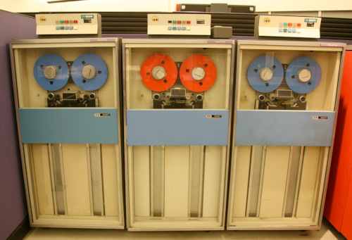

Archiving¶
This section will cover compressing/decompressing files and directories. We will focus on (g)zip and tar.
Objectives
Questions
- How do I compress and decompress files and directories under Linux?
- How do I create an archive (tarball)?
Learning objectives
- Learn about compressing and decompressing files and directories with gzip
- Learn about archiving (creating a tarball) with tar
Compressing and decompressing - (g)zip¶
Compressing files on Linux are generally done with utilities like gzip, bzip2, or zip.
gzip¶
Compression utility designed as a replacement for compress, with much better compression and no patented algorithms. The standard compression system for all GNU software.
Note
gzip is the recommended compression system!
Common options:
- -d: Decompress the file(s) instead of compressing them. Shortcut is
gunzip - -r: Recursively compress/decompress directories and their contents.
- -k: Keep the original file(s) after compression.
- -v: Display verbose output, showing the compression ratio and other details.
Examples¶
Tip
Code along!
Use the files and folders in the directory “exercises” -> “arch”
Compress a file (also removes the uncompressed file)
How it looks for me:
bbrydsoe@enterprise:~/exercises/arch$ ls -la afile.txt
-rw-r--r-- 1 bbrydsoe folk 229 May 28 13:22 afile.txt
bbrydsoe@enterprise:~/exercises/arch$ gzip afile.txt
bbrydsoe@enterprise:~/exercises/arch$ ls -la afile.txt.gz
-rw-r--r-- 1 bbrydsoe folk 180 May 28 13:22 afile.txt.gz
bbrydsoe@enterprise:~/exercises/arch$ ls -la afile.txt
ls: cannot access 'afile.txt': No such file or directory
bbrydsoe@enterprise:~/exercises/arch$
The file “afile.txt” was compressed and the uncompressed file is removed.
Uncompress a file (also removes the compressed file)
or
For me it looks like this (using gunzip):
bbrydsoe@enterprise:~/exercises/arch$ ls -la afile.txt.gz
-rw-r--r-- 1 bbrydsoe folk 180 May 28 13:22 afile.txt.gz
bbrydsoe@enterprise:~/exercises/arch$ gunzip afile.txt.gz
bbrydsoe@enterprise:~/exercises/arch$ ls -la afile.txt
-rw-r--r-- 1 bbrydsoe folk 229 May 28 13:22 afile.txt
bbrydsoe@enterprise:~/exercises/arch$ ls -la afile.txt.gz
ls: cannot access 'afile.txt.gz': No such file or directory
bbrydsoe@enterprise:~/exercises/arch$
Compress a file (and keep the uncompressed file)
How it looks for me:
bbrydsoe@enterprise:~/exercises/arch$ ls -la afile.txt
-rw-r--r-- 1 bbrydsoe folk 229 May 28 13:22 afile.txt
bbrydsoe@enterprise:~/exercises/arch$ gzip -k afile.txt
bbrydsoe@enterprise:~/exercises/arch$ ls -la afile.txt
-rw-r--r-- 1 bbrydsoe folk 229 May 28 13:22 afile.txt
bbrydsoe@enterprise:~/exercises/arch$ ls -la afile.txt.gz
-rw-r--r-- 1 bbrydsoe folk 180 May 28 13:22 afile.txt.gz
bbrydsoe@enterprise:~/exercises/arch$
Compress all files in a directory
bbrydsoe@enterprise:~/exercises/arch$ ls dir2
dir4 myfile-new.txt testfile3.txt testfile4.txt
bbrydsoe@enterprise:~/exercises/arch$ gzip -r dir2
bbrydsoe@enterprise:~/exercises/arch$ ls dir2
dir4 myfile-new.txt.gz testfile3.txt.gz testfile4.txt.gz
bbrydsoe@enterprise:~/exercises/arch$ ls dir2/dir4/
bfile.txt.gz cfile.txt.gz
bbrydsoe@enterprise:~/exercises/arch$
gunzip -r dir2 would then un-gzip all the files again.
Warning
gzip does not archive the files into one file, just compress them!
For archiving files, tar is your friend - often in combination with gzip. More about that soon!
bzip (optional)¶
bzip offers strong, lossless data compressor based on the Burrows-Wheeler transform. Also available as a library.
May compress better than gzip, but is slower.
Examples¶
We are not going to cover bzip more than to briefly give the most common usage.
zip (optional)¶
zip is a simple compression and file packaging utility.
Note
The maximum size limit of a zip file is 4GB and if this size limit is exceeded, the file becomes prone to corruption. This further leads to failure of the extraction process and inaccessibility of your data.
Examples¶
Hint
Code along!
Again, use the files in “exercises” -> “arch”
Compressing afile.txt
Output:
Uncompressing afile.zip
If the file already exists, zip will ask if you want to replace or rename
Output:
Compress all files in one directory to a single archive file
Output:
Compress all files of a certain type in the current directory (and in directories under this) to a single archive file
In this example case for all .c files
Output:
bbrydsoe@enterprise:~/exercises/arch$ zip -r my_c_files.zip . -i \*.c
adding: morefile.c (stored 0%)
adding: C/Adding2.c (deflated 31%)
adding: C/Greeting.c (stored 0%)
adding: C/hello.c (stored 0%)
adding: C/mpi_greeting.c (deflated 35%)
adding: C/mpi_hello.c (deflated 35%)
adding: C/mpi_hi.c (deflated 36%)
adding: C/Mult2.c (deflated 33%)
adding: C/omp_hello.c (deflated 58%)
Archiving - tar¶
Archiving is generally done with tar.
This program saves many files together into a single archive file (concatenates them), and it also restores individual files from the archive. Automatic archive compression/decompression options exists (with various different compression utilities), as well as special features that allow tar to be used for incremental and full backups.
The command tar --help will give the format (defaults to gnu). This is generally only important for files larger than 8 GB.
tar was originally developed for magnetic tape storage – reading and writing data for a sequential I/O device with no file system, and the name is short for the format description “tape archive”.

Note
A tarball is a commonly used name to refer to an archive file in the tar (Tape Archive) format.
A tarball can be compressed with something like gzip or bzip2. There are options/flags to do this automatically with tar.
Syntax¶
Basic options¶
- -c, –create - create a new archive
- -a, –auto-compress - additionally compress the archive with a compressor which will be automatically determined by the file name extension of the archive. If the archive’s name ends with .tar.gz then use gzip, if.tar.xz then use xz, *.tar.zst for Zstandard etc.
- -r, –append - append files to the end of an archive
- -x, –extract, –get - extract files from an archive
- -f, –file - specify the archive’s name
- -t, –list - show a list of files and folders in the archive
- -v, –verbose - show a list of processed files
Examples¶
Hint
Code along!
Again use the files and folders under “exercises” -> “arch”
Generate a tarball
Output:
bbrydsoe@enterprise:~/exercises/arch$ cd ..
bbrydsoe@enterprise:~/exercises$ tar -cvf arch.tar arch/
arch/
arch/myfile.txt
arch/thisfile.txt
arch/morefile.c
arch/dir1/
arch/dir1/testfile
arch/dir1/testfile.txt
arch/dir1/testfile2.txt
arch/dir2/
arch/dir2/dir4/
arch/dir2/dir4/bfile.txt
arch/dir2/dir4/cfile.txt
arch/dir2/testfile3.txt
arch/dir2/myfile-new.txt
arch/dir2/testfile4.txt
arch/dir3/
arch/dir3/dfile.txt
arch/dir3/efile.txt
arch/dir3/ffile.txt
arch/afile.txt
arch/afile.zip
arch/afile-copy.txt
arch/dir1.zip
arch/C/
arch/C/Adding2.c
arch/C/Greeting.c
arch/C/hello.c
arch/C/mpi_greeting.c
arch/C/mpi_hello.c
arch/C/mpi_hi.c
arch/C/Mult2.c
arch/C/omp_hello.c
arch/my_c_files.zip
bbrydsoe@enterprise:~/exercises$ ls -al arch.tar
-rw-r--r-- 1 bbrydsoe folk 40960 May 28 14:27 arch.tar
Extracting the files from a tarball
Warning! If there is already a directory with the same name in the directory you do this, it will overwrite without asking!
Generate a tarball and compress it with gzip
Output:
bbrydsoe@enterprise:~/exercises$ tar -zcvf arch.tar.gz arch/
arch/
arch/dir1/
arch/dir1/testfile
arch/dir1/testfile.txt
arch/dir1/testfile2.txt
arch/dir2/
arch/dir2/dir4/
arch/dir2/dir4/bfile.txt
arch/dir2/dir4/cfile.txt
arch/dir2/testfile3.txt
arch/dir2/myfile-new.txt
arch/dir2/testfile4.txt
arch/dir3/
arch/dir3/dfile.txt
arch/dir3/efile.txt
arch/dir3/ffile.txt
arch/C/
arch/C/Adding2.c
arch/C/Greeting.c
arch/C/hello.c
arch/C/mpi_greeting.c
arch/C/mpi_hello.c
arch/C/mpi_hi.c
arch/C/Mult2.c
arch/C/omp_hello.c
arch/myfile.txt
arch/thisfile.txt
arch/morefile.c
arch/afile.txt
arch/afile.zip
arch/afile-copy.txt
arch/dir1.zip
arch/my_c_files.zip
bbrydsoe@enterprise:~/exercises$ ls -la arch.tar.gz
-rw-r--r-- 1 bbrydsoe folk 4500 May 28 14:44 arch.tar.gz
Compared to the size of the uncompressed tarball:
Uncompressing and extracting files from a tarball
Warning! If there is already a directory with the same name in the directory you do this, it will overwrite without asking!
Summary¶
Keypoints
- we learned about gzip, bzip2, and zip
- we learned about tarballs and compressed tarballs